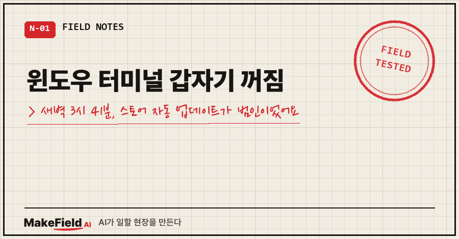
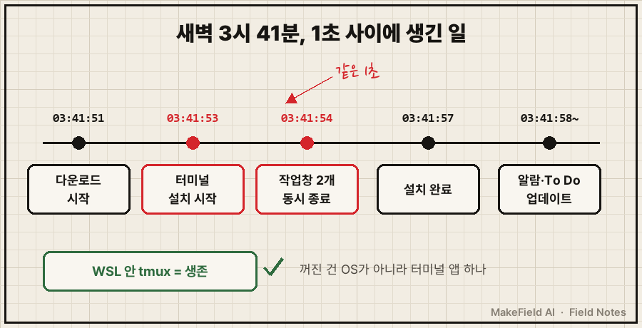
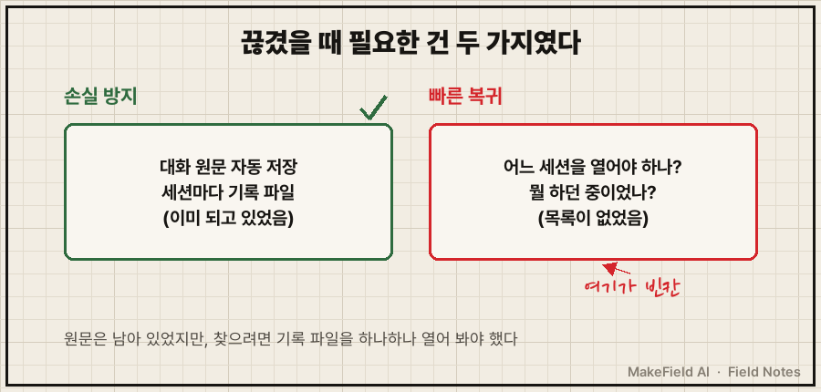
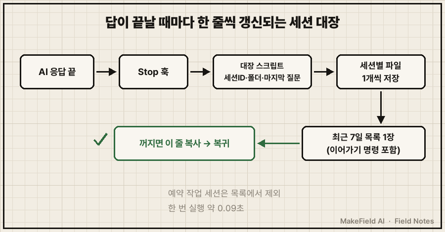

아침에 PC 앞에 앉았더니 전날 띄워 둔 AI 작업창 두 개가 없어져 있었어요.
재부팅도 안 했고, 정전도 없었는데요.
AI한테 처음 던진 말은 이거였습니다.
세션이 다 튕겨져있는데 무슨일이 있었는가?답부터 적을게요. 윈도우 터미널이 갑자기 꺼졌는데 재부팅 기록이 없다면, 마이크로소프트 스토어가 Windows Terminal 앱을 자동 업데이트하면서 열린 창을 닫았을 가능성을 먼저 보세요. 제 경우 새벽 03:41:53에 업데이트 설치가 시작됐고, 1초 뒤인 03:41:54에 터미널 안의 작업 두 개가 같은 초에 끊겼어요.
현장 제어 쪽에서 15년 일한 엔지니어입니다. 요즘은 터미널에 Claude Code 같은 AI 작업창을 여러 개 띄워 두고, 하다 만 일을 다음 날 이어 가는 식으로 써요. 그래서 창이 말없이 사라지면 꽤 당황스럽습니다.
1. 처음엔 재부팅부터 의심했어요
창이 한꺼번에 사라지면 보통 "밤사이 윈도우 업데이트로 재부팅됐나?"부터 떠올리잖아요.
예전에 그걸로 한 번 당해서 활성 시간 설정 글까지 쓴 적이 있거든요.
그런데 확인해 보니 아니었어요.
LastBoot: 11/12/2026 01:33:08
Now: 11/17/2026 07:49:10마지막 부팅이 5일 전이었어요.
게다가 WSL 안에 띄워 둔 tmux 세션은 멀쩡히 살아 있었습니다(up 4 days).
PC 전체가 꺼졌다면 이것도 같이 죽었어야 하니, 꺼진 건 OS가 아니라 터미널 앱 하나라는 뜻이었죠.
2. 오류 로그만 봐서는 안 보였어요
다음으로 지난 12시간 시스템 로그에서 '오류·경고'만 걸러 봤어요.
나온 건 DCOM 권한 경고(10016), 프로세서 속도 제한 알림(37) 같은 평소에도 뜨는 줄뿐이었습니다.
전환점은 거꾸로 접근한 데서 나왔어요.
AI가 대화 기록 파일들을 뒤져서, 꺼진 두 작업창의 마지막 기록이 둘 다 03:41:54, 같은 초라는 걸 먼저 찾았거든요.
그래서 레벨 구분 없이 03:30~03:55 사이 로그를 통째로 열었더니 이렇게 나왔어요. (사용자 경로 줄은 뺐어요)
03:41:51 44 WindowsUpdateClient Windows Update started downloading an update.
03:41:53 43 WindowsUpdateClient Installation Started: ... 9N0DX20HK701-Microsoft.WindowsTerminal
03:41:57 19 WindowsUpdateClient Installation Successful: ... 9N0DX20HK701-Microsoft.WindowsTerminal
03:41:58 43 WindowsUpdateClient Installation Started: ... MICROSOFT.WINDOWSALARMS
03:42:00 43 WindowsUpdateClient Installation Started: ... Microsoft.Todos범인이 '오류'가 아니라 정보 레벨의 정상 설치 기록이었던 거예요.
오류만 걸러 보는 습관으로는 영영 못 찾았을 겁니다..

마이크로소프트 지원 문서도 이 동작을 숨기지 않아요. "Microsoft Store on Windows can automatically install app updates." 설정 위치는 스토어 → 프로필 → Store Settings → App updates예요.
직접 찾아보실 분은 PowerShell에서 시간 창만 바꿔 쓰시면 됩니다.
$s=[datetime]'2026-11-17 03:30'; $e=[datetime]'2026-11-17 03:55'
Get-WinEvent -FilterHashtable @{LogName='System'; StartTime=$s; EndTime=$e} |
Select-Object TimeCreated, Id, ProviderName, Message | Format-List3. 날아간 게 있었나: 손실은 0, 문제는 '어디로 돌아가나'
다행히 잃은 건 없었어요.
Claude Code는 대화를 세션마다 기록 파일로 계속 써 두는데, 두 창 모두 마지막 메시지까지 남아 있었습니다. 둘 다 할 일을 끝내고 대기하던 상태였고, 하나는 10시간째 대기 중이었어요.
11-15 이후 열었던 대화형 세션 11개를 전수로 보니 이랬습니다.
| 구분 | 개수 | 흔적 |
|---|---|---|
| 정상 종료 | 9개 | /exit 기록 있음 |
| 강제 종료 | 2개 | 03:41:54 같은 초, /exit 없음 |
그런데 여기서 진짜 불편이 보였어요.
끊긴 두 개를 찾으려고 AI가 최근 기록 파일을 하나하나 열어 봐야 했다는 거죠.
그래서 제가 물었습니다. "앞으로 대화 기록은 중간중간 자동으로 저장되게 할수없겠는가?"
AI 답은 이랬어요. 원문 저장은 이미 되고 있었다(보존 기간 3650일 설정). 자동이 아니었던 건 "어떤 세션이 열려 있었고 뭘 하던 중이었는지" 한눈에 보는 목록이었다고요.
손실 방지와 빠른 복귀는 다른 문제였던 겁니다.

4. 그래서 만든 것: 응답마다 갱신되는 세션 대장
Claude Code에는 '훅'이라는 기능이 있어요. 특정 시점에 내 스크립트를 자동으로 실행해 주는 장치예요. 그중 Stop 훅은 공식 문서 표현으로 "When Claude finishes responding", AI가 답을 마칠 때마다 돕니다.
여기에 작은 스크립트를 걸었어요. 답이 끝날 때마다 한 파일에 이렇게 한 줄씩 갱신됩니다.
| 마지막 응답 | 시작 | 폴더 | 마지막 질문 | 이어가기 |
|------------|------|------|------------|----------|
| (시각) | (시각) | (작업 폴더) | (내가 마지막에 한 말) | claude --resume (세션 ID) |
만들면서 정한 것들이에요.
- 세션마다 파일 1개: 여러 창이 동시에 답을 끝내도 서로 덮어쓰지 않게
- 대화형만: 밤에 도는 예약 작업 세션은 목록에서 뺐어요(빠지는 것 확인)
- 최근 7일만: 목록이 길어지면 결국 또 뒤져야 하니까요
- 속도: 한 번 도는 데 약 0.09초라 답 속도엔 티가 안 났어요
삽질도 하나 있었어요. 수동 시험이 두 번 연달아 Exit code 1로 실패했는데, 스크립트가 아니라 시험용으로 넣은 입력 JSON의 따옴표 이스케이프가 틀린 거였어요. 입력을 파이썬으로 만들어 넣으니 세 번째에 통과했습니다.
그날 AI는 "훅으로 자동 실행되는 것은 아직 확인하지 않았습니다"라고 선을 그었어요. 그래서 오늘(11-20) 다시 열어 봤습니다. 대장은 갱신: 2026-11-20 00:04:47로 바뀌어 있었고, 세션별 기록 파일이 15개 쌓여 있었어요. 이제야 '돌고 있다'고 쓸 수 있네요.
5. 스토어 자동 업데이트, 끌까 말까
솔직히 아직 안 정했어요.
그날 AI가 내놓은 선택지는 둘이었습니다.
| 방법 | 장점 | 단점 |
|---|---|---|
| 스토어 앱 자동 업데이트 끄기 | 같은 사고가 안 남 | 업데이트를 직접 챙겨야 함 |
| 오래 둘 작업은 WSL tmux 안에서 실행 | 이번에 실제로 살아남은 경로 | 창 관리 방식이 바뀜 |
하나 덧붙이면, 최근엔 스토어에서 자동 업데이트를 완전히 끄지 못하고 최대 5주 일시 중지만 된다는 보도도 있어요(Windows Central). 제 PC 설정 화면은 아직 확인 전이라, 끄기를 고르실 분은 화면부터 보세요.
자주 묻는 질문
Q. 윈도우 터미널이 꺼진 게 업데이트 때문인지 어떻게 확인하나요?
꺼진 시각 앞뒤 몇 분의 시스템 로그를 레벨 구분 없이 보세요. WindowsUpdateClient의 "Installation Started … Microsoft.WindowsTerminal" 줄과 꺼진 시각이 몇 초 안에 붙어 있으면 거의 확정이에요.
Q. 터미널 안에서 돌던 AI 대화는 날아가나요?
Claude Code는 대화를 기록 파일에 계속 써 두기 때문에 claude --resume <세션ID>로 이어 갈 수 있었어요. 다만 답을 쓰는 도중에 끊기면 그 답은 중간에서 멈춥니다. 저는 둘 다 대기 중이라 잘린 게 없었어요.
꺼진 원인을 찾는 데는 1초짜리 겹침 하나면 충분했는데, 돌아갈 곳을 찾는 장치는 따로 만들어야 했어요.
PC 앞에 없는 시간에도 AI 작업을 굴리면서 생긴 사고와 수습 기록은 makefield.ai에 차곡차곡 모으는 중입니다.
출처
- Microsoft Support, "Turn on automatic app updates" — "Microsoft Store on Windows can automatically install app updates.", Profile > Store Settings > App updates → https://support.microsoft.com/en-US/Windows/Apps/turn-on-automatic-app-updates (2026-11-20 확인)
- Windows Central, "Microsoft limits control over app updates in Windows 11 — users can only pause for 5 weeks"(기사 제목) → https://www.windowscentral.com/microsoft/windows-11/microsoft-quietly-removes-ability-to-permanently-stop-apps-from-automatically-updating-on-windows-11-just-like-system-updates (2026-11-20 확인, 내 PC 설정 미확인)
- Claude Code Hooks 문서 — Stop "When Claude finishes responding", 입력 필드 session_id·transcript_path·cwd → https://code.claude.com/docs/en/hooks (2026-11-20 확인)
- 실측: 개인 윈도우 PC 2026-11-17 이벤트 로그·세션 기록 진단, 2026-11-20 세션 대장 갱신 확인(계정·경로·세션 ID·작업 내용 제외)
태그: #윈도우터미널꺼짐 #WindowsTerminal #윈도우터미널 #마이크로소프트스토어 #앱자동업데이트 #스토어업데이트 #이벤트뷰어 #GetWinEvent #클로드코드 #ClaudeCode #세션끊김 #훅 #tmux #막힐때해결 #MakeFieldAI